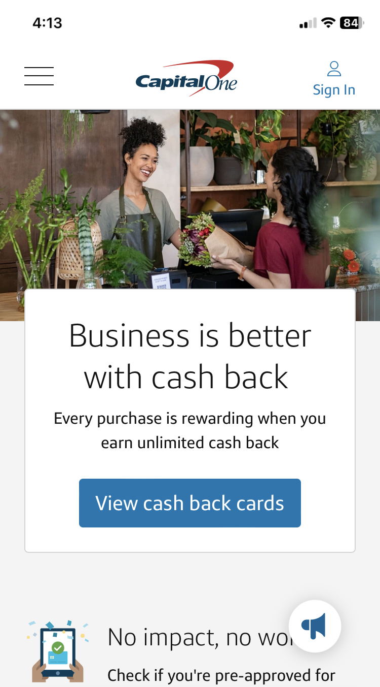
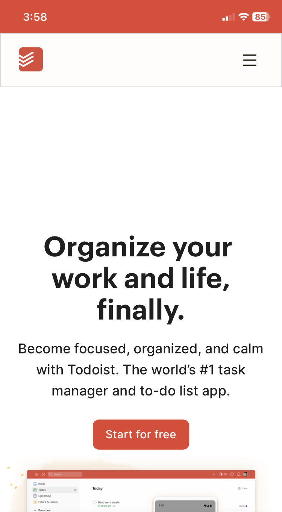

Hick's Law
CyberSmart
Visit Cybersmart
This website uses Hick's law by having a simple menu of options for the user to chose. Rather than being overwhealmed with a myriad of choices this website directs users towards just a few possible locations. The simplicity of this design will likely improve the business's performance by enhancing the user experience.
Visual Hierarchy
CapitalOne
Visit CapitalOne
Capital One's website uses visual Hierarchy to point site visitors toward promotions and deals they are currently pushing. By increasing the size of the promotions compared to the normal size of the regular options, the user is directed towards clicking to learn more about their latest deals.
White Space and Clean Design
Todoist
Visit Todoist
Todoist's website uses a very clean and user friendly design that uses white space as part of their aesthetic. One of the main purposes of this website is to help users reduce stress by having an organized palce to consolidate the repetitive tasks of their daily lives, and by having a clean design with plently of white space it invites a sense of calm.